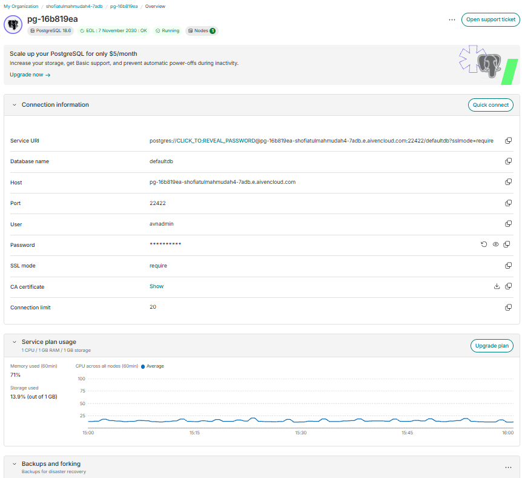
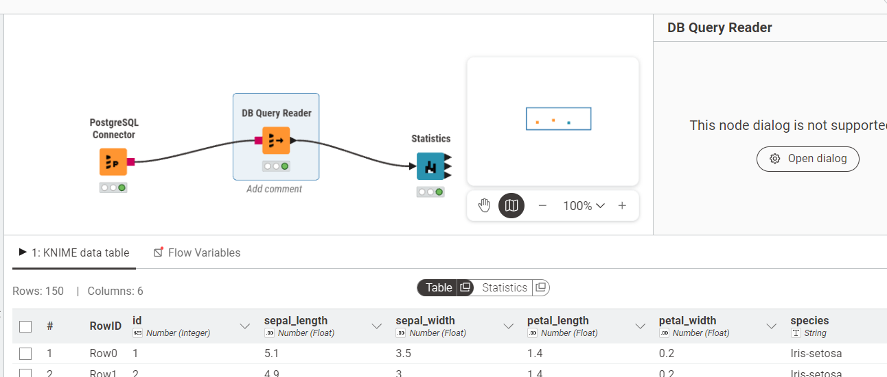
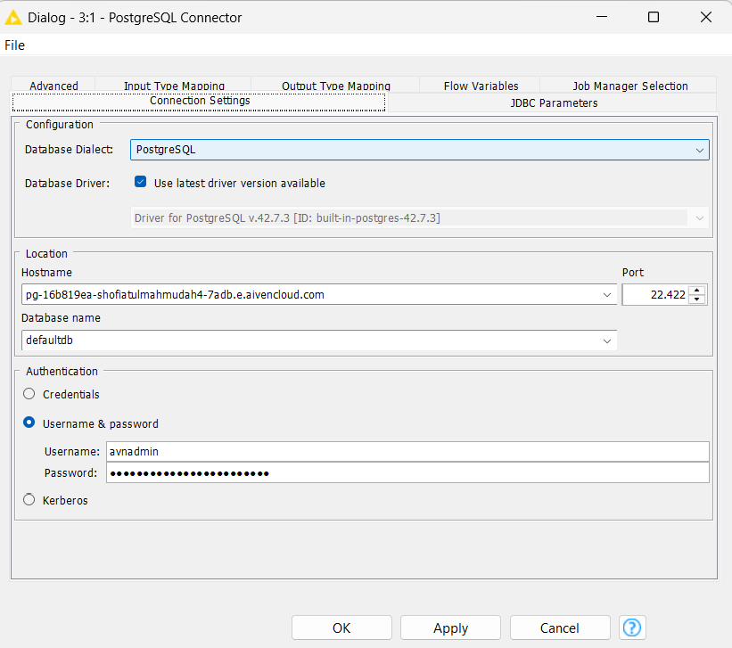
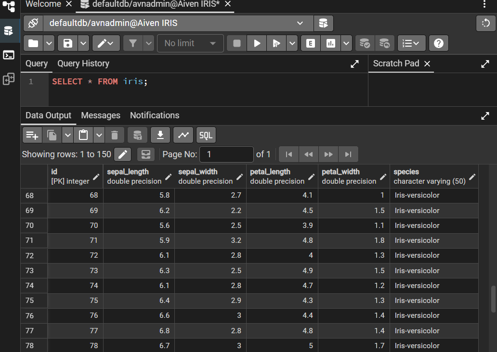
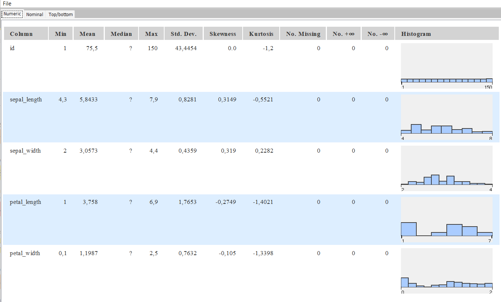

Analisis Statistik Dataset Iris Menggunakan PostgreSQL Aiven dan KNIME#
1. Pendahuluan#
Dataset Iris merupakan salah satu dataset yang dapat digunakan untuk mempelajari pengolahan dan analisis data. Pada tugas ini, dataset Iris yang sebelumnya disimpan dalam bentuk CSV dipindahkan ke cloud database menggunakan Aiven PostgreSQL. Data tersebut kemudian diambil kembali menggunakan KNIME untuk dilakukan analisis statistik. Analisis dilakukan untuk memperoleh informasi mengenai karakteristik data seperti nilai minimum, mean, median, maksimum, standard deviation, kurtosis, skewness, dan jumlah data yang hilang.
2. Tujuan#
Memindahkan dataset Iris dari CSV ke cloud database Aiven PostgreSQL.
Menghubungkan database PostgreSQL Aiven dengan KNIME.
Mengambil data Iris dari PostgreSQL menggunakan KNIME.
Menghasilkan statistik deskriptif menggunakan KNIME.
Menjelaskan setiap properti statistik yang dihasilkan.
Melakukan contoh perhitungan statistik secara manual.
3. Dataset Iris#
Dataset yang digunakan dalam tugas ini adalah dataset Iris  yang diperoleh dari hasil tugas sebelumnya. Dataset berisi data pengukuran bunga Iris yang terdiri dari beberapa atribut numerik dan satu atribut kategori.
Bagian |
Keterangan |
|---|---|
Jumlah data/baris |
150 baris |
Jumlah atribut utama |
5 kolom |
Atribut 1 |
|
Atribut 2 |
|
Atribut 3 |
|
Atribut 4 |
|
Atribut 5 |
|
Jenis spesies |
3 jenis: Iris setosa, Iris versicolor, Iris virginica |
Jumlah masing-masing spesies |
50 data per spesies |
Nilai numerik |
4 atribut pengukuran bunga |
Data kategorikal |
|
contoh data:
sepal_length |
sepal_width |
petal_length |
petal_width |
species |
|---|---|---|---|---|
5.1 |
3.5 |
1.4 |
0.2 |
setosa |
4.9 |
3.0 |
1.4 |
0.2 |
setosa |
4.7 |
3.2 |
1.3 |
0.2 |
setosa |
4. Persiapan Database PostgreSQL di Aiven#
4.1 Membuat Service PostgreSQL#
Aiven digunakan sebagai cloud platform untuk menyediakan layanan database PostgreSQL. Pada tahap ini dibuat sebuah service PostgreSQL yang digunakan sebagai tempat penyimpanan dataset Iris.

5. Membuat Tabel Iris#
Masukkan SQL yang saya gunakan:
CREATE TABLE iris (
id SERIAL PRIMARY KEY,
sepal_length DOUBLE PRECISION,
sepal_width DOUBLE PRECISION,
petal_length DOUBLE PRECISION,
petal_width DOUBLE PRECISION,
species VARCHAR(50)
);
Tabel iris dibuat untuk menyimpan data dataset Iris. Setiap kolom disesuaikan dengan atribut yang terdapat pada dataset, sedangkan kolom id digunakan sebagai identitas setiap baris data.
6. Menghubungkan PostgreSQL dengan KNIME#

6.1 PostgreSQL Connector#
Node PostgreSQL Connector digunakan untuk membuat koneksi antara KNIME dengan database PostgreSQL yang berada pada Aiven.

6.2 DB Query Reader#
Setelah koneksi berhasil dibuat, node DB Query Reader digunakan untuk mengambil data dari database menggunakan perintah SQL. masukkan:
SELECT * FROM iris;

7. Analisis Statistik Menggunakan KNIME#
7.1 Statistics#
Node Statistics digunakan untuk memperoleh statistik deskriptif dari dataset Iris. Statistik yang dihasilkan digunakan untuk mengetahui karakteristik dan distribusi data pada setiap kolom numerik.

8. Hasil Statistik#
Column |
Min |
Mean |
Median |
Max |
Std. Dev |
Skewness |
Kurtosis |
No. Missing |
No. +∞ |
No. -∞ |
|---|---|---|---|---|---|---|---|---|---|---|
id |
1 |
75,5 |
? |
150 |
43,4454 |
0,0 |
-1,2 |
0 |
0 |
0 |
sepal_length |
4,3 |
5,8433 |
? |
7,9 |
0,8281 |
0,3149 |
-0,5521 |
0 |
0 |
0 |
sepal_width |
2 |
3,0573 |
? |
4,4 |
0,4359 |
0,319 |
0,2282 |
0 |
0 |
0 |
petal_length |
1 |
3,758 |
? |
6,9 |
1,7653 |
-0,2749 |
-1,4021 |
0 |
0 |
0 |
petal_width |
0,1 |
1,1987 |
? |
2,5 |
0,7632 |
-0,105 |
-1,3398 |
0 |
0 |
0 |
9. Penjelasan Setiap Statistik#
Statistik |
Penjelasan Singkat |
Rumus |
Contoh |
|---|---|---|---|
Column |
Menunjukkan nama atribut/kolom yang dianalisis pada dataset. |
– |
|
Min |
Nilai terkecil yang terdapat dalam suatu kolom data. |
\((Min(x)=\min(x_1,x_2,\ldots,x_n))\) |
Data: 2, 4, 6 → Min = 2 |
Mean |
Nilai rata-rata dari seluruh data. |
\((\bar{x}=\frac{\sum_{i=1}^{n}x_i}{n})\) |
2, 4, 6 → \(((2+4+6)/3=\mathbf{4})\) |
Median |
Nilai tengah setelah data diurutkan dari terkecil ke terbesar. |
Jika \((n\) ganjil: \(x_{(n+1)/2})\) |
2, 4, 6, 8, 10 → Median = 6 |
Max |
Nilai terbesar yang terdapat dalam suatu kolom data. |
\((Max(x)=\max(x_1,x_2,\ldots,x_n))\) |
2, 4, 6 → Max = 6 |
Std. Dev. |
Mengukur seberapa jauh data menyebar dari nilai rata-ratanya. |
\((\sigma=\sqrt{\frac{\sum(x_i-\bar{x})^2}{n}})\) |
Semakin besar Std. Dev. → data semakin menyebar |
Variance |
Mengukur tingkat penyebaran data berdasarkan kuadrat selisih setiap data terhadap rata-rata. |
\((\sigma^2=\frac{\sum(x_i-\bar{x})^2}{n})\) |
Data 2, 4, 6 → Mean = 4 → Variance = 2,67 |
Skewness |
Menunjukkan tingkat kemiringan atau ketidaksimetrisan distribusi data. |
\((Skewness=\frac{1}{n}\sum\left(\frac{x_i-\bar{x}}{\sigma}\right)^3)\) |
Skewness > 0 → miring ke kanan |
Kurtosis |
Mengukur bentuk/keruncingan distribusi data dibandingkan distribusi normal. |
\((Kurtosis=\frac{1}{n}\sum\left(\frac{x_i-\bar{x}}{\sigma}\right)^4)\) |
Nilai tinggi → distribusi lebih runcing |
No. Missing |
Menunjukkan jumlah data yang kosong atau tidak memiliki nilai. |
\((Missing=\text{jumlah nilai kosong})\) |
150 data, 2 kosong → No. Missing = 2 |
No. +unlimited |
Menunjukkan jumlah nilai positif tak hingga (+∞) dalam kolom. |
\((+\infty=\text{nilai positif tak hingga})\) |
Dataset Iris normal → 0 |
No. -unlimited |
Menunjukkan jumlah nilai negatif tak hingga (-∞) dalam kolom. |
\((-\infty=\text{nilai negatif tak hingga})\) |
Dataset Iris normal → 0 |
Count |
Menunjukkan jumlah data yang digunakan dalam perhitungan statistik. |
\((Count=n)\) |
Dataset Iris → 150 data |
Sum |
Jumlah seluruh nilai dalam suatu kolom. |
\((Sum=\sum_{i=1}^{n}x_i\)\) |
2 + 4 + 6 = 12 |
10. Contoh Perhitungan#
Statistik |
Perhitungan |
Hasil |
|---|---|---|
Count |
Jumlah data = 5 |
5 |
Sum |
2 + 4 + 5 + 7 + 9 |
27 |
Mean |
27 ÷ 5 |
5,4 |
Median |
Data tengah = 5 |
5 |
Min |
Nilai terkecil |
2 |
Max |
Nilai terbesar |
9 |
Variance |
\(([(2-5,4)^2+(4-5,4)^2+(5-5,4)^2+(7-5,4)^2+(9-5,4)^2]÷5)\) |
6,64 |
Std. Dev. |
\((\sqrt{6,64})\) |
2,58 |
Missing |
Tidak ada data kosong |
0 |
+∞ |
Tidak ada nilai +∞ |
0 |
-∞ |
Tidak ada nilai -∞ |
0 |
11. Hasil dan Pembahasan#
Berdasarkan hasil statistik menggunakan KNIME, setiap atribut numerik pada dataset Iris memiliki nilai minimum, maksimum, mean, median, dan standard deviation yang berbeda. Perbedaan tersebut menunjukkan adanya variasi karakteristik pada masing-masing atribut.